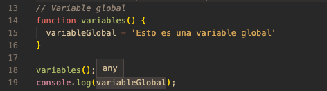
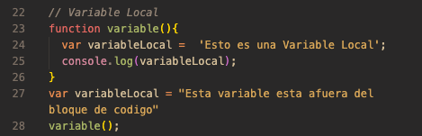

Examen final
Jordy Alexander Vega Aldana 1190-18-9769
Serie I. (10 pts. resuelva las preguntas con sus propias palabras)
Serie II. (10 pts./ desarrolle lo que se le pide a continuación)
El scope puede definirse como el alcance que una variable tendrá en tu código. En otras palabras, el scope decide a qué variables tienes acceso en cada parte del código. Existen dos tipos de scope, el scope global y el scope local. A continuación te mostraré un par de ejemplos explicando en qué consiste cada uno de ellos.
Sin Scope
Con Scope
Explícita: Es cuando convertimos un valor a otro de manera apropiada (String, Number, etc) Implícita: Cuando se convierten los valores de manera “automática”, y comúnmente es cuando aplicamos los operadores de valores diferentes (true + false, “hola” + 2 + 3, etc), y también cuando aplicamos if(value) {}, donde se hace coacción es el valor a un booleano.
coerción implícita

Nos permite no asignarle a un nombre un conjunto de instrucciones que deseemos ejecutarlo sin necesidad de asociarlo.
Funcion anonima